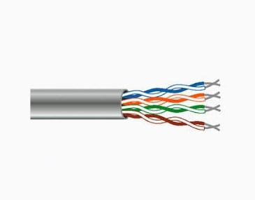

Tipos de Medios Guiados
Par Trenzado
Este consiste en dos alambres de cobre aislados, en general de 1mm de espesor, que se trenzan entre sí. La forma trenzada del cable se utiliza para reducir la interferencia eléctrica con respecto a los pares cercanos que se encuentran a su alrededor. Los pares trenzados se pueden utilizar tanto para transmisión analógica como digital, y su ancho de banda depende del calibre del alambre y de la distancia que recorre.

Categorías Principales
Soporta velocidades de hasta 1 Gbps.
Soporta hasta 10 Gbps a distancias cortas.
Mejora la velocidad y reduce aún más la interferencia.
Ventajas
- Económico.
- Fácil de instalar y manejar.
- Amplia compatibilidad con dispositivos de red.
Desventajas
- Limitado en distancia y velocidad en comparación con la fibra óptica.
- Susceptible a interferencias externas.